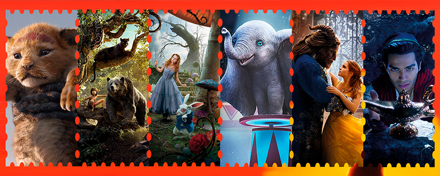

Estrenos del mes
Por: Jerrika Lozano
Para esta temporada nada mejor que ir a cine y ver los últimos estrenos de la cartelera, con el excelente servicio y la comodidad de los Multicines de Royal Films. ¡El mejor plan para toda la familia; disfrutar de las mejores películas y al mejor precio!
¡LLEVAMOS LA EXPERIENCIA DEL CINE A OTRO NIVEL!
En Royal Films contamos con las novedosas salas 4DX, una de las tecnologías más avanzadas que ofrece una experiencia cinematográfica totalmente envolvente.
La nueva sala 4DX excede la tercera dimensión, además de una proyección y sonido de alta calidad, la sala cuenta con efectos multisensoriales, sillas con movimiento, efectos ambientales como el viento, burbujas, y aroma, trabajan en perfecta sincronía con la acción en la pantalla.
Cada silla está equipada con simuladores programados para realizar movimientos básicos y poder crear un sin fin de combinaciones posibles para imitar acciones tales como volar y conducir.
Además de los movimientos, la sala está equipada con efectos ambientales para mejorar aún más la experiencia. A partir de un juego de luces para simular una tormenta, ventiladores para recrear brisas suaves, rociadores para generar sensación de humedad y esencia de olor real.
por: Laura Contreras
El Rey León está por estrenarse y aquellos que rondan los 30 años saben que esta película marcó sus vidas para siempre, la entrega llega para una nueva generación en un formato digno de las nuevas tecnologías, el live action de esta película está dirigido por Jon Favreau y el elenco está conformado por estrellas como Donald Glover, Seth Rogen, Chiwetel Ejiofor, John Oliver, Keegan Michael-Key y Beyoncé.
A 25 años de la versión que se convirtió en un clásico, Walt Disney nos está inyectando una dosis narcótica de nostalgia a la que es difícil resistirse. Desde el 2010 empezaron a producirse los éxitos animados de Disney en versiones reales, inició con Alicia en el país de la maravillas de Tim Burton, luego para el 2016 llegó el director Jon Favreau con su versión de El libro de la selva, al año siguiente La bella y la bestia. Este 2019 estará lleno de este nuevo formato pues películas como Dumbo, Aladdin han tenido gran aceptación sin dejar de mencionar Mulán que se estrenara en el 2020 y las que vienen La dama y el vagabundo y Blanca nieves y los siete enanitos.

Toda una serie de títulos dirigidos a un nuevo público quienes viven la transición del 2D al 3D, que viven el Wifi e Instragram y aunque estas películas estén dirigidas a niños, los adultos que aún se sienten jóvenes, y lo son por supuesto, no se perderán ninguna de estas películas.
¡La nostalgia ya ganó!
Maestras del engaño
The hustle / 27 de junio
En una nueva y divertidísima comedia, Anne Hathaway y Rebel Wilson protagonizan a unas verdaderas Maestras del Engaño. Dos polos opuestos se unen para acabar con los hombres que en algún momento las despreciaron.
Spiderman: Lejos de casa
Spiderman far from home / 4 de julio
Luego de los eventos de Avengers Endgame, Spider-Man debe enfrentarse a las nuevas amenazas de un mundo que ha cambiado.
Dolor y Gloria
11 de julio
Narra una serie de reencuentros en la vida de Salvador Mallo, un director de cine en su ocaso. Como su infancia en los años 60, cuando emigró con sus padres a Paterna, un pueblo de Valencia, en busca de prosperidad, así como el primer deseo, su primer amor adulto ya en el Madrid de los 80, entre otros. Escoge la escritura como única terapia para olvidar lo inolvidable. Dolor y Gloria habla de la creación, de la dificultad de separar la ficción de la realidad. En la recuperación de su pasado, Salvador encuentra la necesidad urgente de volver a escribir.

El Rey León
The lion king / 18 de julio
La nueva versión de acción real de El Rey León de Disney, del director Jon Favreau, nos lleva a la sabana africana donde un futuro rey ha nacido. Simba idolatra a su padre, el rey Mufasa, y está entusiasmado con su destino real. Pero no todos en el reino celebran la llegada del nuevo cachorro. Scar, el hermano de Mufasa y antiguo heredero al trono, tiene sus propios planes. Una batalla de se ve teñida de traición, tragedia, drama y acaba forzando a Simba al exilio. Con la ayuda de una curiosa pareja de amigos nuevos, Simba tendrá que arreglárselas para crecer y recuperar lo que legítimamente le corresponde.
Intruso
25 de julio
Una joven pareja de casados (Michael Ealy y Meagan Good) compran la casa de sus sueños en el Valle de Napa, y creen que han encontrado el hogar perfecto para dar sus próximos pasos como familia. Sin embargo, el vendedor de la casa (Dennis Quaid) continúa infiltrándose en sus vidas, comenzando a sospechar que él tiene motivos ocultos más allá de una venta rápida.
Rápidos y furiosos: Hobbs & Shaw
fast & furious hobbs & shaw / 1 de agosto
Hobbs (Johnson), un leal agente del Servicio de Seguridad Diplomática de América, y el forajido Shaw (Statham), un ex militar operativo británico, se enfrentaron por primera vez en Rápidos & Furiosos 7, el dúo ha intercambiado confrontaciones verbales y físicas al intentar derrotarse. Sin embargo, cuando Brixton (Idris Elba), un anarquista cybergenéticamente modificado toma el control de una mortífera arma biológica que podría cambiar a la humanidad. Estos dos enemigos a muerte deberán hacer equipo para vencer al único hombre que podría ser más terrible que ellos mismos.